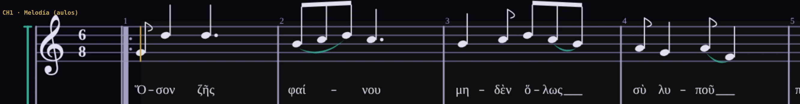

Das Seikilos-Epitaph.
Eine fast zweitausend Jahre alte Marmorsäule bewahrt das älteste vollständige Lied, das wir kennen: Text, Melodie und Rhythmus. Hier erklingt es in der Demo des Score, mit dem griechischen Text an jede Note gebunden und der Übersetzung darunter.
Ein Lied, das einen Blumentopf überlebte.
-
1. oder 2. Jahrhundert n. Chr.
Seikilos lässt sie meißeln
In Tralles in Kleinasien (heute Aydın, Türkei) lässt ein Mann namens Seikilos ein Gedicht, ein Lied mit seinen Notenzeichen und eine Widmung an Euterpe in eine kleine Säule meißeln. Vielleicht ist sie seine Frau, vielleicht die Muse der Musik. Wir wissen es nicht.
-
1883
Die Eisenbahn und der Blumentopf
Sie wird beim Bau der Eisenbahn gefunden. Der Ingenieur Edward Purser nimmt sie mit nach Hause und lässt ihren Fuß gerade absägen, damit sie einen Blumentopf seiner Frau tragen kann. Der Schnitt zerstört die letzte Zeile, die heute nur durch einen früheren Abklatsch bekannt ist.
-
1922
Der Brand von Smyrna
Während des Brandes von Smyrna bringt der niederländische Konsul sie aus der Stadt. Sie reist über Istanbul und Stockholm nach Den Haag, wo sie mehr als vierzig Jahre bleibt, während man sie für verloren hält.
-
1966 — heute
Kopenhagen
Das Dänische Nationalmuseum in Kopenhagen erwirbt sie; dort ist sie heute ausgestellt.
Solange du lebst, strahle.
Über dem Lied spricht der Stein von sich selbst: „Ich bin ein Bild aus Stein. Seikilos hat mich hierher gestellt, ein dauerhaftes Zeichen einer Erinnerung, die nicht stirbt.“ Über jeder Silbe des Textes stehen die Buchstaben der griechischen Vokalnotation, die die Tonhöhe angeben, und Zeichen, die sagen, wie lange sie dauert.
Vom Stein zur Partitur.
arr. M. Maurano · ClaudeModus und Stimmung
Viele Transkriptionen notieren es mit zwei Kreuzen. Hier steht es einen Ton tiefer im griechischen phrygischen Modus auf D, ohne Vorzeichen. Es klingt in pythagoreischer Stimmung, der Stimmung der griechischen Theoretiker: reine Quinten, wie das Keyboard sie berechnet.
Rhythmus und Form
Im 6/8-Takt auf 72, mit Wiederholung. Am Ende des Durchgangs teilt sich die letzte Viertelnote in zwei Achtel, damit jede Silbe ihre Note hat, und ein letzter übergebundener Takt schließt das Stück. Zwei Stimmen: die Melodie, wie ein Aulos, und ein Bordun, wie eine Kithara.
Der Text auf der Note
Jede griechische Silbe ist an ihre Note gebunden: Sie bewegt sich mit ihr, leuchtet mit ihr auf und geht in der Wiederholung nicht verloren. Die Übersetzung läuft in zwei Zeilen unter dem System. So kannst du den Text deiner eigenen Werke schreiben.

Dieselbe Geschichte in bunten Bildern erzählt — der Zug, der Blumentopf, die Reise — und am Ende das Lied: Es erklingt, und die Silben leuchten auf der Säule auf. Zum Zeigen im Unterricht oder zum Verschicken an die Schüler.